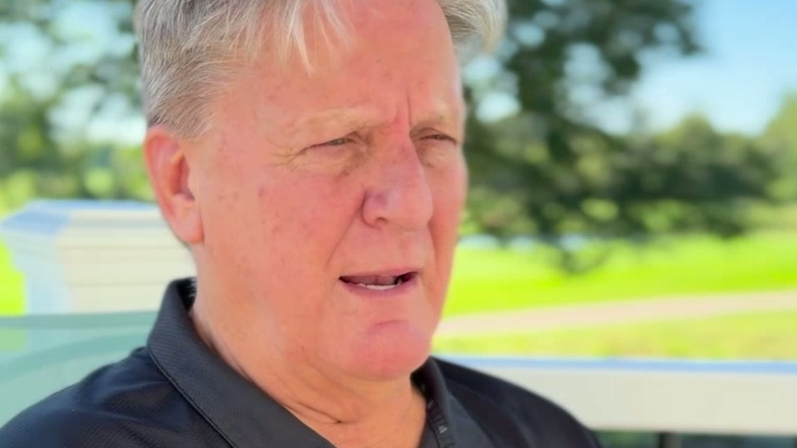

ScaleRev — advisors page
Screenshots
Videos on the page (4)
Hosted on the page itself cost-comparison · 3:02 · original 1280×720, 137.1 MB
research copy 480p · full quality in Downloads
Hosted on the page itself how-appointments-differ · 1:34 · original 1280×720, 89.9 MB
research copy 480p · full quality in Downloads
Hosted on the page itself out-of-state-clients · 1:25 · original 1280×720, 81.6 MB
research copy 480p · full quality in Downloads
Hosted on the page itself were-you-skeptical · 1:07 · original 1280×720, 63.7 MB
research copy 480p · full quality in Downloads
Images (4)
